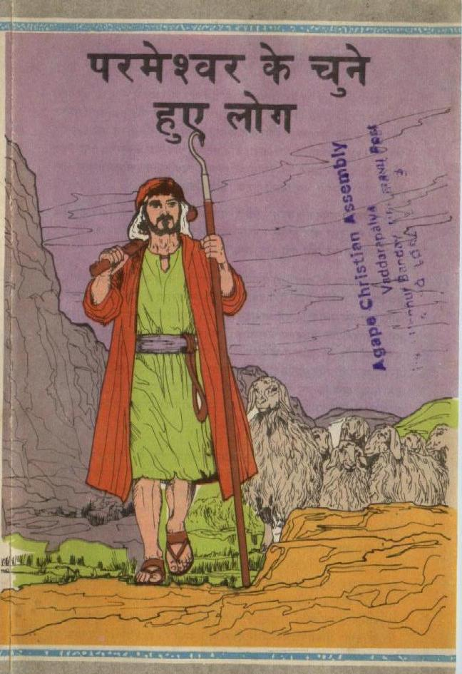
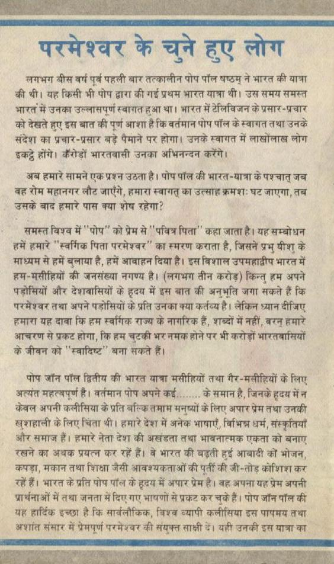
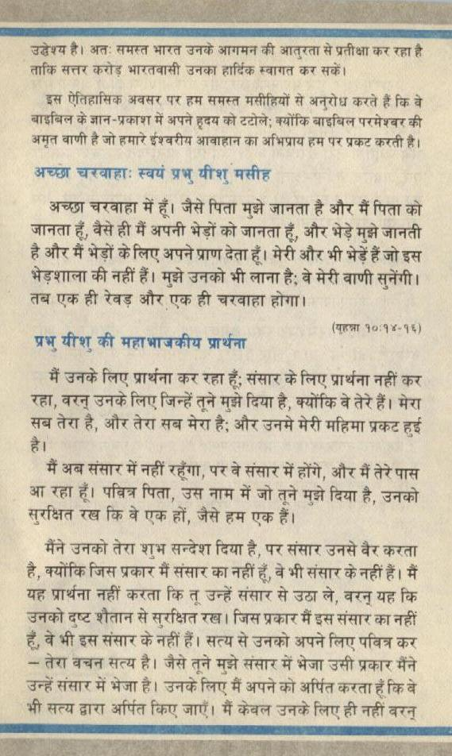
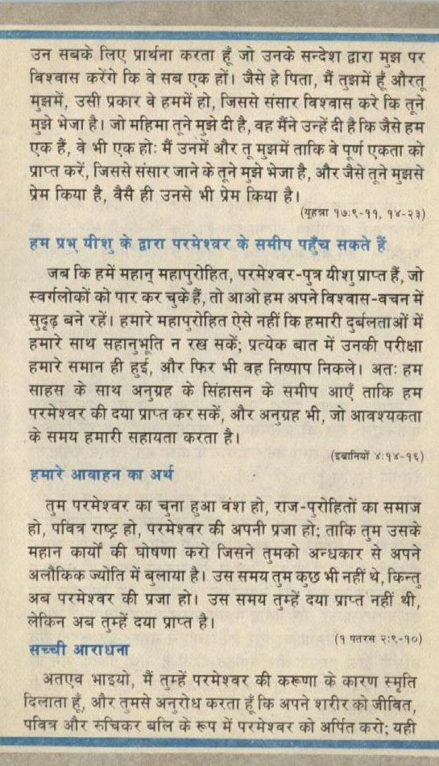
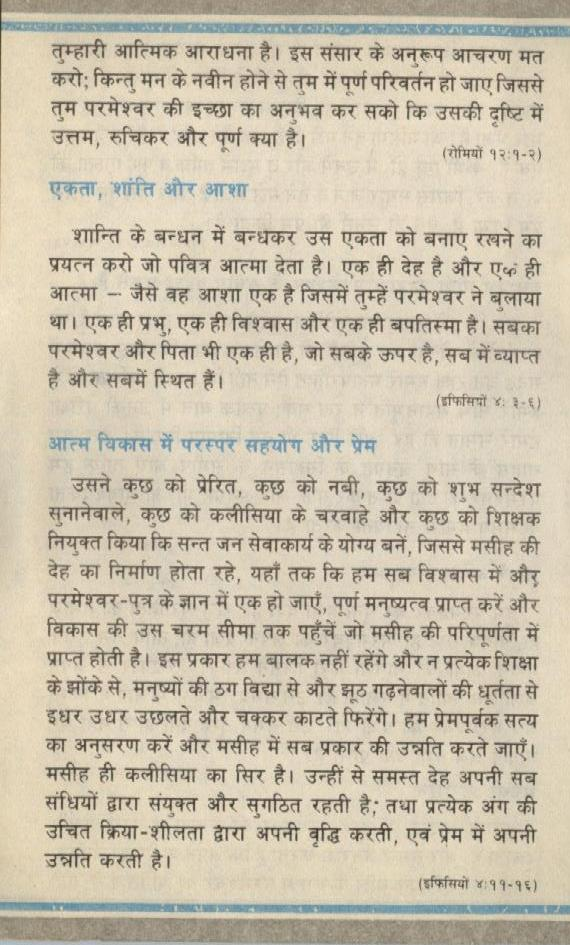
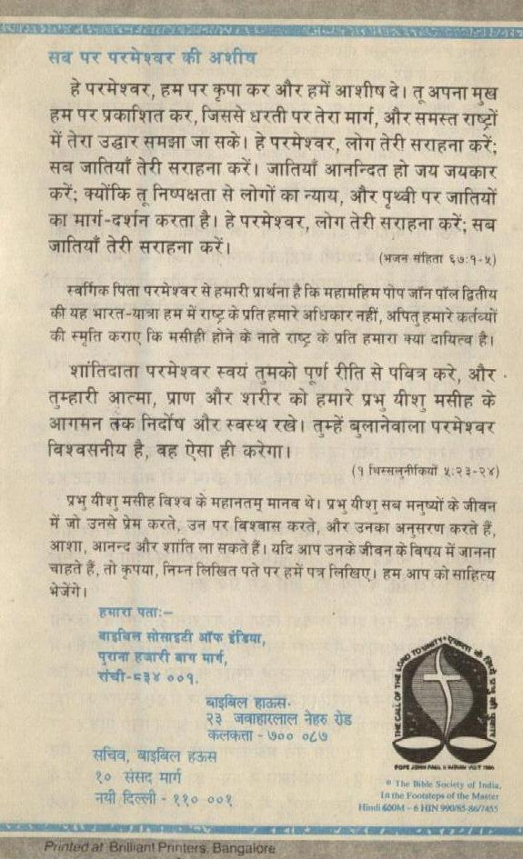

1. पामेशर को चुने हुए लोग
Hindi gospel tract · 6 pages · tap a page to enlarge












Text of this pamphlet
RR SR EE Wea ASTER. Ae ० ARBORS
लगभग बीस वर्ष पूर्व पहली बार तत्कालीन पोप पॉल षष्ठम ने भारत की यात्रा की थी। यह किसी भी पोप द्वारा की गई प्रथम भारत यात्रा थी। उस समय समस्त भारत में उनका उल्लासपूर्ण स्वागत हुआ था। भारत में टेलिविजन के प्रसार-प्रचार को देखते हुए इस बात की पूर्ण आशा है कि वर्तमान पोष पॉल के स्वागत तथा उनके संदेश का प्रचार-प्रसार बड़े पैमाने पर होगा। उनके स्वागत में लाखोंलाख़ लोग wag होंगे। कैंरोड़ों भारतवासी उनका अभिनन्दन करेंगे।
अब हमारे सामने एक प्रश्न उठता है। पोप पाल की भारत-यात्रा के पश्चात् जब बह रोम महानगर लौट जाएँगे, हमारा स्वागत् का उत्साह क्रमश: घट जाएगा, तब उसके बाद हमारे पास क्या शेष रहेगा?
समस्त विश्व में ''पोष को प्रेम से '' पवित्र पिता'' कहा जाता है। यह सम्बोधन हमें हमारे ''स्वर्गिक पिता परमेश्वर का स्मरण कराता है, जिसने प्रभु यीशु के माध्यम से हमें बुलाया है, हमें आवाहन दिया है। इस विशाल उपमहाद्वीप भारत में हम-मसीहियों की जनसंख्या नगण्य है। (लगभग तीन करोड़) किन्तु हम अपने पड़ोसियों और देशवासियों के हृदय में इस बात की अनुभूति जगा सकते हैं कि परमैश्वर तथा अपने पड़ोसियों के प्रति उनका क्या कर्तव्य है। लेकिन ध्यान दीजिए हमारा यह दावा कि हम स्वर्गिक राज्य के नागरिक हैं, शब्दों में नहीं, वरन॒ हमारे आचरण से प्रकट होगा, कि हम चुटकी भर नमक होने पर भी करोड़ों भारतवासियों के जीवन को ''स्वादिष्ट” बना सकते हैं।
पोष जॉन पॉल द्वितीय की भारत यात्रा मसीहियों तथा गैर-मसीहियों के लिए अत्यंत महत्वपूर्ण है। वर्तमान पोष अपने कई........ के समान है, जिनके हृदय में न केवल अपनी कलीसिया के प्रति बल्कि तमाम मनुष्यों के लिए अपार प्रेम तथा उनकी खुशहाली के लिए चिंता थी। हमारे देश में अनेक भाषाएँ, विभिन्न धर्म संस्कृतियाँ और समाज हैं। हमारे नेता देश की अखंडता तथा भावनात्मक एकता को बनाए रखने का अथक प्रयत्न कर रहें हैं। वे भारत की बढ़ती हुई आबादी को भोजन, कपड़ा, मकान तथा शिक्षा जैसी आवश्यकताओं की पूर्ती की जी-तोड़ कोशिश कर रहें हैं। भारत के प्रति पोष पॉल के हृदय में अपार प्रेम है। वह अपना यह प्रेम अपनी प्रार्थनाओं में तथा जनता में दिए गए भाषणों से प्रकट कर च॒के हैं। पोष जॉन पॉल की यह हार्दिक इच्छा है कि सार्वलौकिक, विश्व व्यापी कलीसिया इस पापमय तथा अशांत संसार में प्रेमपूर्ण परमेश्वर की संयुक्त साक्षी दें। यही उनकी इस यात्रा का
उद्वेश्य है। अत: समस्त भारत उनके आगमन की आतरता से प्रतीक्षा कर रहा है ताकि सत्तर करोड़ भारतवासी उनका हार्दिक स्वागत कर सकें।
इस ऐतिहासिक अवसर पर हम समस्त मसीहियों से अनुरोध करते हैं कि वे बाइबिल के ज्ञान-प्रकाश में अपने हृदय को टटोले; क्योंकि बाइबिल परमेश्वर की अमृत वाणी है जो हमारे ईश्वरीय आवाहान का अभिप्राय हम पर प्रकट करती है।
अच्छा चरवाहाः स्वयं प्रभु यीशु मसीह
अच्छा चरवाहा में हूँ। जैसे पिता मुझे जानता है और मैं पिता को जानता हूँ, वैसे ही मैं अपनी भेड़ों को जानता हूँ, और भेड़े मुझे जानती है और मैं भेड़ों के लिए अपने प्राण देता हूँ। मेरी और भी भेड़ें हैं जो इस भेड़शाला की नहीं हैं। मुझे उनको भी लाना है; वे मेरी वाणी सुनेंगी। तब एक ही रेवड़ और एक ही चरवाहा होंगा।
ww ater की महा भाजकीय प्रार्थना
मैं उनके लिए प्रार्थना कर रहा हूँ; संसार के लिए प्रार्थना नहीं कर रहा, वरन् उनके लिए जिन्हें तूने मुझे दिया है, क्योंकि वे तेरे हैं। मेरा सब तेरा है, और तेरा सब मेरा है; और उनमे मेरी महिमा प्रकट हुई
मैं अब संसार में नहीं can, पर वे संसार में होंगे, और मैं तेरे पास आ रहा हूँ। पत्रित्र पिता, उस नाम में जो तूने मुझे दिया है, उनको सुरक्षित रख कि वे एक हों, जैसे हम एक हैं।
मैंने उनको तेरा शुभ सन्देश दिया है, पर संसार उनसे az करता है, क्योंकि जिस प्रकार मैं संसार का नहीं हूँ, वे भी संसार के नहीं हैं। मैं यह प्रार्थना नहीं करता कि तू उन्हें संसार से उठा ले, acy यह कि उनको दृष्ट शैतान से सुरक्षित रख। जिस प्रकार मैं इस संसार का नहीं हूँ, वे भी इस संसार के नहीं हैं। सत्य से उनको अपने लिए पवित्र कर - तेरा बचन्त सत्य है। जैसे तूने मुझे संसार में भेजा उसी प्रकार मैंने उन्हें संसार में भेजा है। उनके लिए मैं अपने को अर्पित करता हूँ कि वे भी सत्य द्वारा अर्पित किए जाएँ। मैं केवल उनके लिए ही नहीं ae
उन सबके लिए प्रार्थना करता हूँ जो उनके सन्देश द्वारा मुझ पर विश्वास करेंगे कि वे सब एक हों। जैसे हे पिता, मैं तुझमें हैँ औरतू मुझमें, उसी प्रकार वे हममें हो, जिससे संसार विश्वास करे कि तूने मुझे भेजा है। जो महिमा तूने मुझे दी है, वह मैंने उन्हें दी है कि जैसे हम एक हैं, वे भी एक हो: मैं उनमें और तू मुझमें ताकि वे पूर्ण एकता को प्राप्त करें, जिससे संसार जाने के तूने मुझे भेजा है, और जैसे तूने मुझसे प्रेम किया है, वैसे ही उनसे भी प्रेम किया है le ‘ AT १७:९-११, १४-२३
हम प्रभ् यीशु के द्वारा परमेश्व्वर के समीप पहुँच सकते हैं
जब कि हमें महान् महापुरोहित, परमेश्वर -पुत्र यीशु प्राप्त हैं, जो स्वर्गलोकों को पार कर चुके हैं, तो आओ हम अपने विश्वास-वचन में सुदृढ़ बने रहें। हमारे महाप्रोहित ऐसे नहीं कि हमारी दुर्बलताओं में हमारे साथ सहानुभूति न रख सकें; प्रत्येक बात में उनकी परीक्षा हमारे समान ही हुई, और फिर भी वह निष्पाप निकले। अतः हम साहस के साथ अनुग्रह के सिंहासन के समीप आएँ ताकि हम परमेश्वर की दया प्राप्त कर सकें, और अनुग्रह भी, जो आवश्यकता
के समय हमारी सहायता करता है। (बानियों ४:१४-१६)
तुम परमेश्वर का चुना हुआ वंश हो, राज-प्रोहितों का समाज हो, पवित्र राष्ट्र हो, परमेश्वर की अपनी प्रजा हो; ताकि तुम उसके महान कार्यों की घोषणा करो जिसने तुमको अन्धकार से अपने अलौकिक ज्योति में बुलाया है। उस समय तुम क॒छ भी नहीं थे, किन्तु अब परमेश्वर की प्रजा हो। उस समय तुम्हें दया प्राप्त नहीं थी, लेकिन अब तुम्हें दया प्राप्त है। सच्छी आराधना
अतएव भाइयो, मैं तुम्हें परमेश्वर की करूणा के कारण स्मृति दिलाता हूँ, और तुमसे अनुरोध करता हूँ कि अपने शरीर को जीवित, पवित्र और रूचिकर बलि के रूप में परमेश्वर को अर्पित करो; यही
ae आत्मिक आराधना है। इस संसार के अनुरूप आचरण मत करो; किन्तु मन के नवीन होने से तम में पूर्ण परिवर्तन हो जाए जिससे तुम परमेश्वर की इच्छा का अनुभव कर सको कि उसकी दृष्टि में
उत्तम, रुचिकर और पूर्ण क्या है। 02]
शान्ति के बन्धन में बन्धकर उस एकता को बनाए रखने का प्रयत्न करो जो पवित्र आत्मा देता है। एक ही देह है और Tee ही आत्मा - जैसे वह आशा एक है जिसमें तुम्हें परमेश्वर ने बुलाया था। एक ही प्रभू, एक ही विश्वास और एक ही बपतिस्मा है। सबका परमेश्वर और पिता भी एक ही है, जो सबके ऊपर है, सब में व्याप्त
है और सबमें स्थित हैं। (इफिसिय्ों ४; ३-६)
आत्म विकास में परस्पर सहयोग और प्रेम
उसने ao को प्रेरित, कुछ को नबी, कुछ को शुभ सन्देश सुनानेबाले, कुछ को कलीसिया के चरवाहे और eo को शिक्षक नियुक्त किया कि सन्त जन सेवाकार्य के योग्य बनें, जिससे मसीह की देह का निर्माण होता रहे, यहाँ तक कि हम सब विश्वास में और परमेश्वर-पुत्र के ज्ञान में एक हो जाएँ, पूर्ण मनुष्यत्व प्राप्त करें और विकास की उस चरम सीमा तक पहुँचें जो मसीह की परिपूर्णता में प्राप्त होती है। इस प्रकार हम बालक नहीं रहेंगे और न प्रत्येक शिक्षा के झोंके से, मनुष्यों की ठग विद्या से और झूठ गढ़नेवालों की धूर्तता से इधर उधर उछलते और चक्कर काटते फिरेंगे। हम प्रेमपूर्वक सत्य का अनुसरण करें और मसीह में सब प्रकार की उन्नति करते जाएँ। मसीह ही कलीसिया का सिर है। उन्हीं से समस्त देह अपनी सब संधियों ढ्वारा संयुक्त और सुगठित रहती है; तथा प्रत्येक अंग की उचित क्रिया-शीलता द्वारा अपनी वृद्धि करती, एवं प्रेम में अपनी
उन्नति करती है। (इफिसियों ४:११-१६)
करपजला इ ।अथ करा एप मा एक Tl hens bebteiidesdbendsaiihadbassiintiied sie Sedinideeidanladl का
SIDER ERE RO SEE PT BESTE सब पर परमेश्वर की अशीष है परमेश्वर, हम पर कृपा कर और हमें आशीष दे। तू अपना मुख हम पर प्रकाशित कर, जिससे धरती पर तेरा मार्ग, और समस्त राष्ट्रों में तेरा उद्धार समझा जा सके। हे परमेश्वर, लोग तेरी सराहना करें; सब जातियाँ तेरी सराहना करें। जातियाँ आनन्दित हो जय जयकार करें; क्योंकि तू निष्पक्षता से लोगों का न्याय, और पृथ्वी पर जातियों का मार्ग-दर्शन करता है। हे परमेश्वर, लोग तेरी सराहना करें; सब जातियाँ तेरी सराहना करें। ever aah स्वर्गिक पिता परमेश्वर से हमारी प्रार्थना है कि महामहिम पौप जॉन पॉल द्वितीय की यह भारत-यात्रा हम में राष्ट्र के प्रति हमारे अधिकार नहीं, अपितु हमारे कर्तव्यों की स्मृति कराए कि मसीहीं होने के नाते राष्ट्र के प्रति हमारा क्या दायित्व है।
शांतिदाता परमेश्वर स्वयं तुमको पूर्ण रीति से पवित्र करे, और - तुम्हारी आत्मा, प्राण और शरीर को हमारे oH ater मसीह के आगमन तक निर्दोष और स्वस्थ रखे। तुम्हें बुलानेवाला परमेश्वर विश्वसनीय है, बह ऐसा ही करेगा।
(१ घिस्सलुतीकियों ४:२३-२४)
प्रभु यीशु मसीह विश्व के महानतम् मानव थे। प्रभु यीश् सब मनुष्यों के जीवन में जो उनसे प्रेम करते, उन पर विश्वास करते, और उनका अनुसरण करते हैं, आशा, आनन्द और शांति ला सकते हैं। यदि आप उन्तके जीवन के विषय में जानना चाहते हैं, तो कृपया, निम्त लिखित पते पर हमें पत्र लिखिए। हम आप को साहित्य हमारा पता:- आाइविल सोसाइटी ऑफ इंडिया, पुराना हजारी art art,
कलकत्ता - Yoo ०८७ सचिव, बाइबिल हऊस
१० संसद मार्ग The tke 5७०५७ la,
नयी दिल्ली - ११० ००१ Win nt rs
ACS CARNE ERAS Af EC AT सह: या" 2 RP # ड:ड आह पर.
Text extracted automatically from the scanned pamphlet; please refer to the page images for the exact wording.